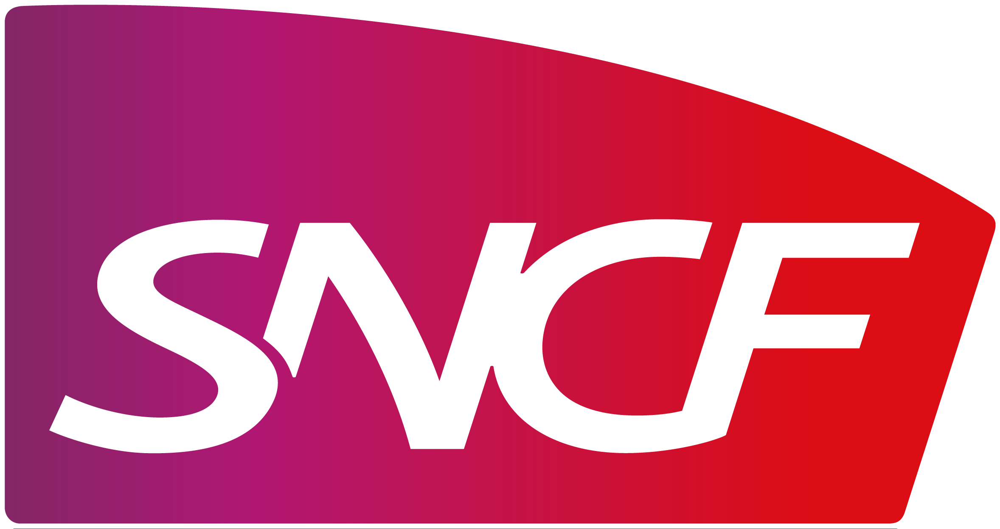
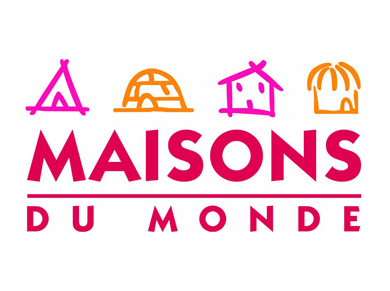

-
BTS MUC
en Alternance
Dijon (21)
De Septembre 2007 à Juin 2009 (2 ans)
 -
MASTER 1 COMMUNICATION
en Alternance
Nice (06)
De Septembre 2009 à Juin 2011 (2 ans)
-
CHARGEE DE COMMUNICATION - RESPONSABLE SERVICE CLIENT
Eunice - Centre d'Appels
Nice (06)
De Septembre 2011 à Décembre 2013 (24 mois)
-
CONSEILLERE DE VENTE POLYVALENTE
Montpellier (34)
De Janvier 2014 à Septembre 2015 (18 mois)
 -
FORMATION PROFESSEUR DES ECOLES
Montpellier (34)
De septembre 2015 à Mai 2016 (1 an)

-
FORMATION DEVELOPPEMENT WEB
Montpellier (34)
De septembre 2016 à Juillet 2017 (10 mois)

-
STAGE DEVELOPPEMENT WEB
Montpellier (34)
De mais 2017 à Juillet 2017 (2 mois)

To be continued...